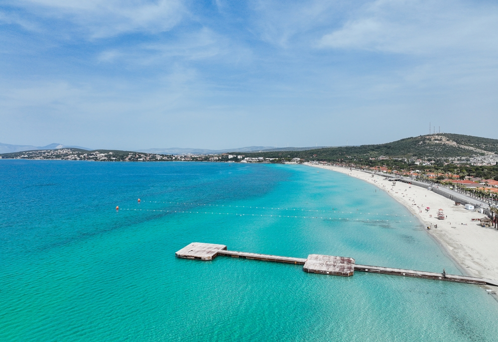

İzmir, deniz turizmiyle ünlü bir şehirdir. Çeşme ve Alaçatı, berrak denizi ve plajlarıyla tatilcilerin uğrak noktalarıdır. Su sporları da bölgede oldukça yaygındır.
Ayrıca İzmir'de yıl boyunca kültürel festivaller düzenlenir. Doğa yürüyüşleri, tekne turları ve yöresel lezzet turları da popüler aktiviteler arasındadır.